In this section I want to look at the data on the granular country/medium level. Roughly, the questions I plan to ask and answer are:
identify and remove some noise in the data (low or zero volume mediums ?)
explore the marketing mix across countries in terms of the main metrics
e.g. which mediums bring the most revenue and is this consisent across countries ?
are there some things that jump out in terms of “bad traffic” (bounce rates and session durations) ?
are there countries with relatively low volume of free traffic - that however converts very well - which could indicate potential for market expansion ?
Using the results from the Country analysis - I decided to filter out some of the low volume countries in terms of # users, transactions and revenue. This should reduce the noise and focus on higher volume and impact markets while keeping our insights actionable.
Code
by_country <- medium_country_raw |>group_by(country) |>summarise(# summable-metricsacross(c(users, new_users, sessions, transactions, revenue), sum ),# take medians for the rates, shares, durationsacross(c(bounce_rate, pages_session, avg_session_duration, ecommerce_conversion_rate), median ) ) |>ungroup() |># calculate new columnsmutate(revenue_per_transaction = revenue / transactions,new_users_share = new_users / users, ) |>arrange(desc(revenue))# filter only bigger volume countriesby_country <- by_country |>filter((revenue >20000) | (users >1000) | (transactions >100) )
Rename country-level columns with a suffix, I will stick them to the country-medium data to be able to compute further columns like shares and percentages.
Setup a clean dataframe on country / medium level and compute some additional metrics.
Code
medium_country <-# filtering join on top-volume countries medium_country_raw |>inner_join(by_country, join_by(country)) |># re-arrange a bitarrange(desc(revenue_country), country, desc(revenue)) |>relocate(country, .before = medium) |># calculate share of channel within country for main metricsmutate(revenue_share = revenue / revenue_country,users_share = users / users_country,new_users_share = new_users / new_users_country,sessions_share = sessions / sessions_country,transactions_share = transactions / transactions_country ) |># rank channels within countrygroup_by(country) |>mutate(across(c(users, new_users, sessions, transactions, revenue),.fns =~dense_rank(desc(.x)),.names ="{col}_channel_within_country_rank" ) ) |>ungroup()medium_country |>filter(country =="Spain") |>datatable(options =list(dom ="t"))
Besides filtering out the low volume countries, I would like to also filter out the super low volume (country, medium) pairs. In the above table for instance, scrolling to the last page shows pairs like e.g. (Spain, Twitter) , (Spain, sms) which have 1 user and 0 revenue.
I would like to check the share of such low volume country/medium pairs. Again taking just some kind of cut-off points - I’m going to start with:
Ok seems like quite a big percentage of the country/medium pairs are actually low volume i.e. have less than 10 users, 10 transactions and 100 revenue. This seems quite a low benchmark so removing them seems the correct way to go because their contribution and impact is very limited.
In order to see the effect of this - I would like to check the number of mediums per country before and after the removal.
What are the contributions of different mediums to the main metrics, across the different countries ?
Absolute
I am going to stack each country’s bars to the total absolute volume of the respective metric. The different colours of the mediums would add up to the total of the country for that metric in absolute units.
medium_country |>semi_join( by_country |>slice_max(order_by = sessions_country, n =20),join_by(country) ) |>filter(country !="(not set)") |>mutate(medium =fct_lump(medium, n =6, w = sessions),medium =fct_reorder(medium, sessions, max),country =fct_reorder(country, sessions, sum) ) |>ggplot(aes(x = sessions, y = country, fill = medium)) +geom_col(position ="stack") +scale_x_continuous(labels =comma_format(), expand =c(0, 0.3)) +scale_fill_brewer(palette ="Dark2", direction =1) +theme(plot.title.position ="plot",legend.position ="bottom" ) +labs(title ="Sessions contribution of Mediums across Countries",y =NULL )
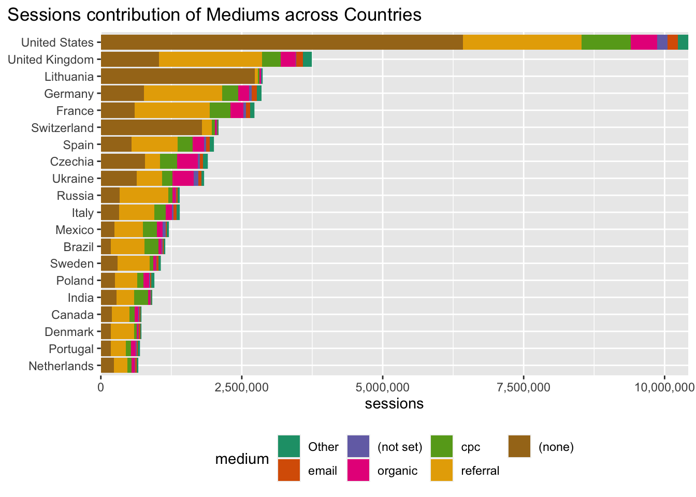
Code
medium_country |>semi_join( by_country |>slice_max(order_by = users_country, n =20),join_by(country) ) |>filter(country !="(not set)") |>mutate(medium =fct_lump(medium, n =6, w = users),medium =fct_reorder(medium, users, mean),country =fct_reorder(country, users, sum) ) |>ggplot(aes(x = users, y = country, fill = medium)) +geom_col(position ="stack") +scale_x_continuous(labels =comma_format(), expand =c(0, 0.3)) +scale_fill_brewer(palette ="Dark2", direction =1) +theme(plot.title.position ="plot",legend.position ="bottom" ) +labs(title ="Users contribution of Mediums across Countries",y =NULL )
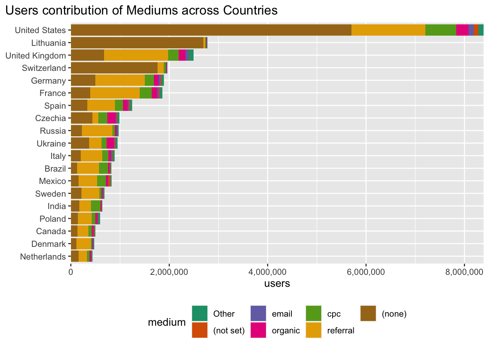
Code
medium_country |>semi_join( by_country |>slice_max(order_by = new_users_country, n =20),join_by(country) ) |>filter(country !="(not set)") |>mutate(medium =fct_lump(medium, n =6, w = new_users),medium =fct_reorder(medium, new_users, mean),country =fct_reorder(country, new_users, sum) ) |>ggplot(aes(x = new_users, y = country, fill = medium)) +geom_col(position ="stack") +scale_x_continuous(labels =comma_format(), expand =c(0, 0.3)) +scale_fill_brewer(palette ="Dark2", direction =1) +theme(plot.title.position ="plot",legend.position ="bottom" ) +labs(title ="New Users contribution of Mediums across Countries",y =NULL )
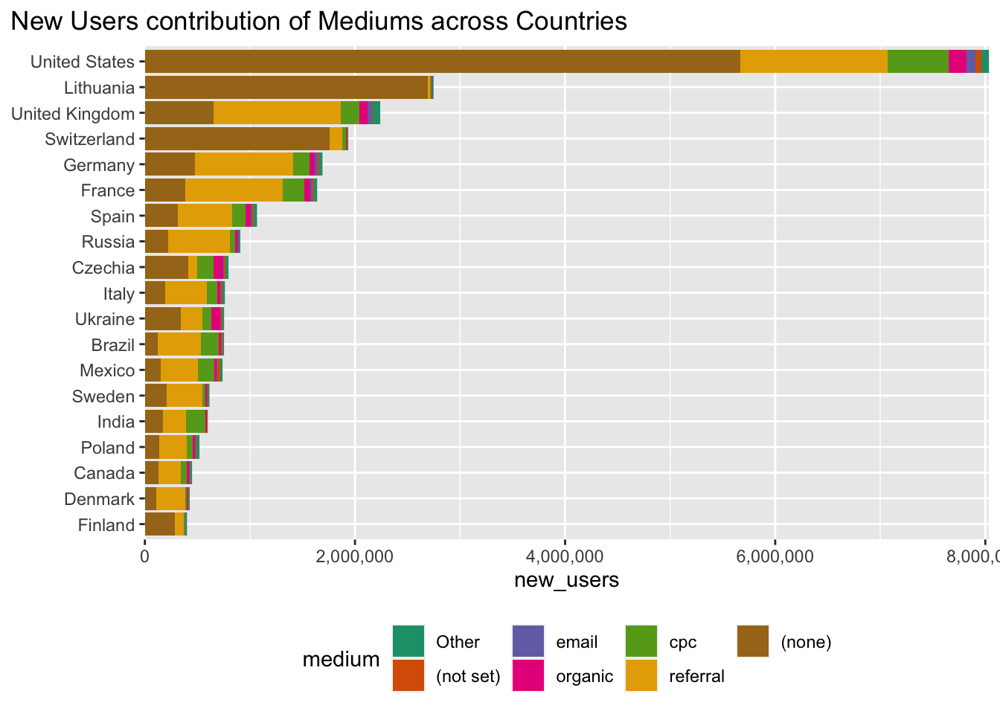
Code
medium_country |>semi_join( by_country |>slice_max(order_by = revenue_country, n =4),join_by(country) ) |>filter(country !="(not set)") |>mutate(medium =fct_lump(medium, n =7, w = ecommerce_conversion_rate),medium =fct_reorder(medium, ecommerce_conversion_rate, mean),country =fct_reorder(country, ecommerce_conversion_rate, sum) ) |>ggplot(aes(x = ecommerce_conversion_rate, y = country, fill = medium)) +geom_col(position ="stack") +scale_x_continuous(labels =percent_format(accuracy =0.1), expand =c(0, 0)) +scale_fill_brewer(palette ="Dark2", direction =1) +theme(plot.title.position ="plot",legend.position ="bottom" ) +labs(title ="Ecommerce conversion rate contribution of Mediums across Countries",y =NULL )
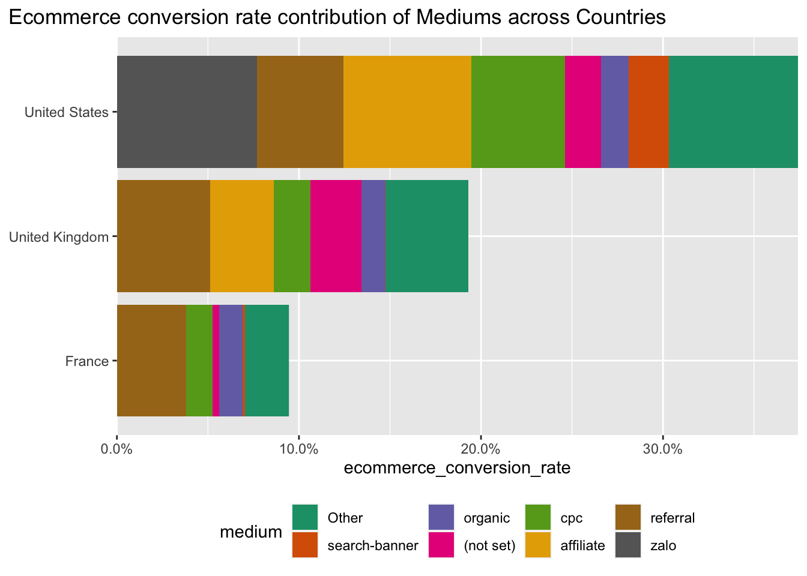
Code
medium_country |>semi_join( by_country |>slice_max(order_by = transactions_country, n =20),join_by(country) ) |>filter(country !="(not set)") |>mutate(medium =fct_lump(medium, n =6, w = transactions),medium =fct_reorder(medium, transactions, mean),country =fct_reorder(country, transactions, sum) ) |>ggplot(aes(x = transactions, y = country, fill = medium)) +geom_col(position ="stack") +scale_x_continuous(labels =comma_format(), expand =c(0, 0.3)) +scale_fill_brewer(palette ="Dark2", direction =1) +theme(plot.title.position ="plot",legend.position ="bottom" ) +labs(title ="Transactions contribution of Mediums across Countries",y =NULL )
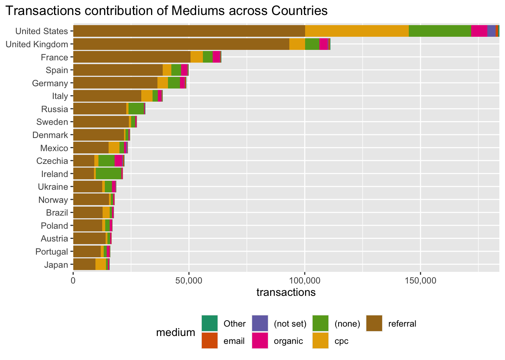
Code
medium_country |>semi_join( by_country |>slice_max(order_by = revenue_country, n =20),join_by(country) ) |>filter(country !="(not set)") |>mutate(medium =fct_lump(medium, n =6, w = revenue),medium =fct_reorder(medium, revenue, mean),country =fct_reorder(country, revenue, sum) ) |>ggplot(aes(x = revenue, y = country, fill = medium)) +geom_col(position ="stack") +scale_x_continuous(labels =comma_format(), expand =c(0, 0.3)) +scale_fill_brewer(palette ="Dark2", direction =1) +theme(plot.title.position ="plot",legend.position ="bottom" ) +labs(title ="Revenue contribution of Mediums across Countries",y =NULL )
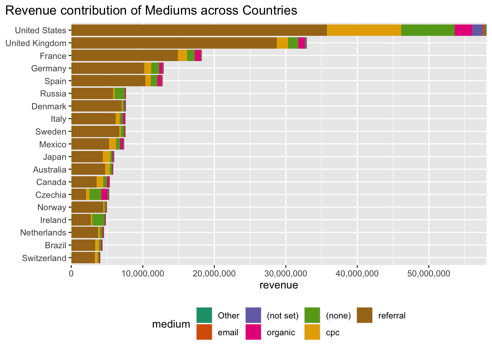
Share
Here i want to stack each country’s bars to 100% of the respective metric. The different colours of the mediums would represent the share in % that this medium contributed to the 100% for that metric and for that country.
medium_country |>semi_join( by_country |>slice_max(order_by = sessions_country, n =20),join_by(country) ) |>filter(country !="(not set)") |>mutate(medium =fct_lump(medium, n =6, w = sessions_share),medium =fct_reorder(medium, sessions_share, max),country =fct_reorder(country, sessions, sum) ) |>ggplot(aes(x = sessions_share, y = country, fill = medium)) +geom_col(position ="stack") +scale_x_continuous(labels =percent_format(), expand =c(0, 0)) +scale_fill_brewer(palette ="Dark2", direction =1) +theme(legend.position ="bottom") +labs(title ="Sessions share per Medium across Countries",y =NULL )
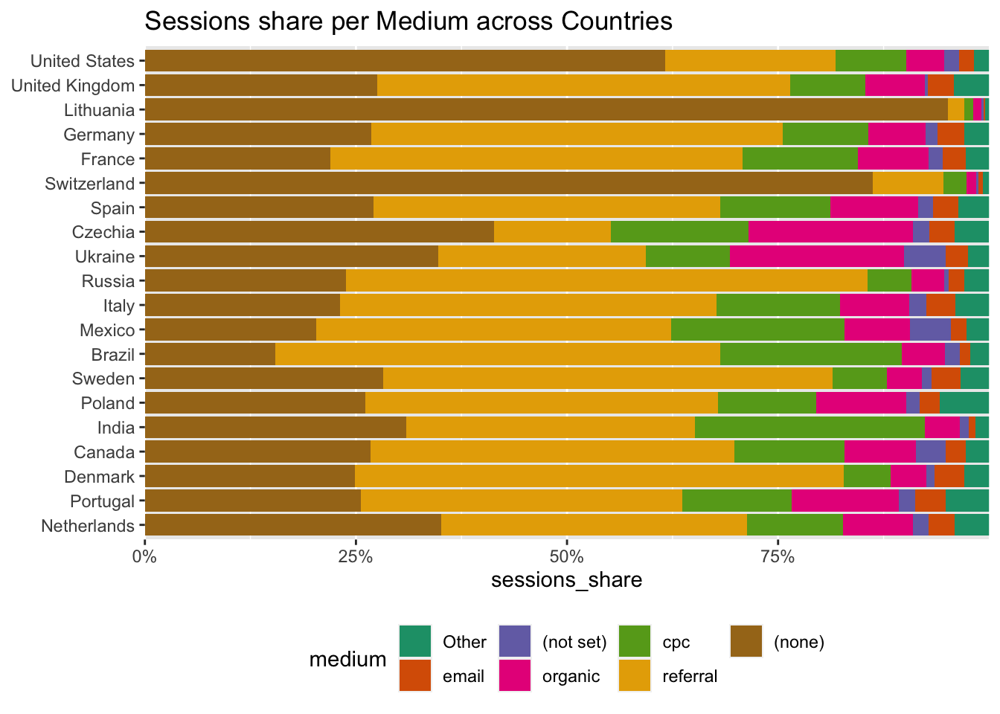
Code
medium_country |>semi_join( by_country |>slice_max(order_by = users_country, n =20),join_by(country) ) |>filter(country !="(not set)") |>mutate(medium =fct_lump(medium, n =6, w = users_share),medium =fct_reorder(medium, users_share, max),country =fct_reorder(country, users, sum) ) |>ggplot(aes(x = users_share, y = country, fill = medium)) +geom_col(position ="stack") +scale_x_continuous(labels =percent_format(), expand =c(0, 0)) +scale_fill_brewer(palette ="Dark2", direction =1) +theme(legend.position ="bottom") +labs(title ="Users share per Medium across Countries",y =NULL )
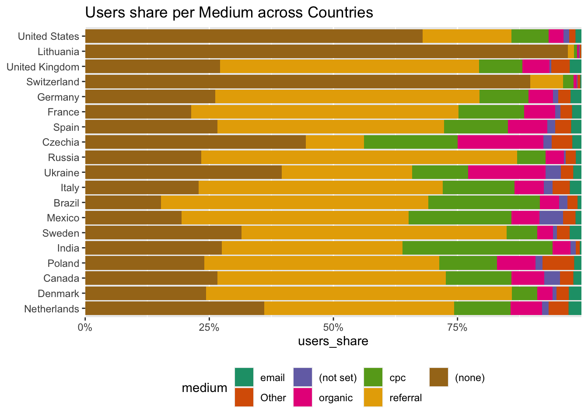
Code
medium_country |>semi_join( by_country |>slice_max(order_by = new_users_country, n =20),join_by(country) ) |>filter(country !="(not set)") |>mutate(medium =fct_lump(medium, n =6, w = new_users_share),medium =fct_reorder(medium, new_users_share, max),country =fct_reorder(country, new_users, sum) ) |>ggplot(aes(x = new_users_share, y = country, fill = medium)) +geom_col(position ="stack") +scale_x_continuous(labels =percent_format(), expand =c(0, 0)) +scale_fill_brewer(palette ="Dark2", direction =1) +theme(legend.position ="bottom") +labs(title ="New Users share per Medium across Countries",y =NULL )
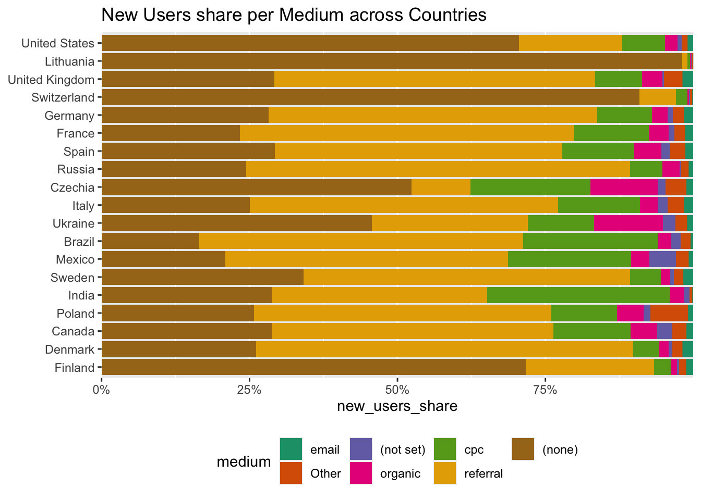
Code
medium_country |>semi_join( by_country |>slice_max(order_by = transactions_country, n =20),join_by(country) ) |>filter(country !="(not set)") |>mutate(medium =fct_lump(medium, n =6, w = transactions_share),medium =fct_reorder(medium, transactions_share, max),country =fct_reorder(country, transactions, sum) ) |>ggplot(aes(x = transactions_share, y = country, fill = medium)) +geom_col(position ="stack") +scale_x_continuous(labels =percent_format(), expand =c(0, 0)) +scale_fill_brewer(palette ="Dark2", direction =1) +theme(legend.position ="bottom") +labs(title ="Transactions share per Medium across Countries",y =NULL )
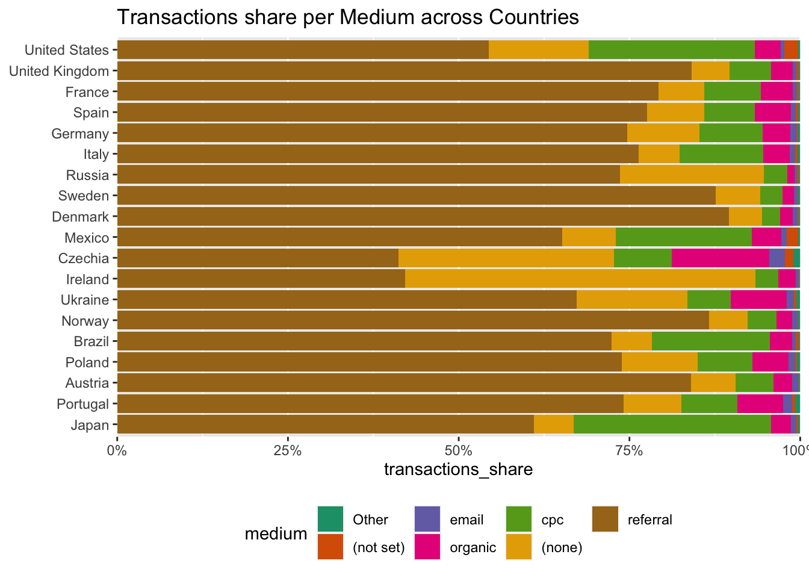
Code
medium_country |>semi_join( by_country |>slice_max(order_by = revenue_country, n =20),join_by(country) ) |>filter(country !="(not set)") |>mutate(medium =fct_lump(medium, n =6, w = revenue_share),medium =fct_reorder(medium, revenue_share, mean),country =fct_reorder(country, revenue, sum) ) |>ggplot(aes(x = revenue_share, y = country, fill = medium)) +geom_col(position ="stack") +scale_x_continuous(labels =percent_format(), expand =c(0, 0)) +scale_fill_brewer(palette ="Dark2", direction =1) +theme(plot.title.position ="plot",legend.position ="bottom" ) +labs(title ="Revenue share per Medium across Countries",y =NULL )
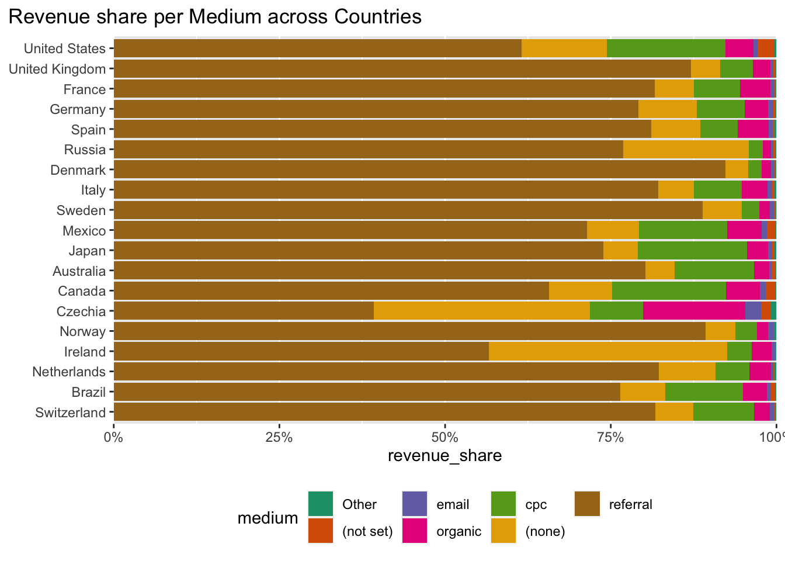
Table of medians
Tabulated view of the median values for each medium - of the respective metric’s country share e.g. the median for referral’s transaction_share across all countries. Should give an idea of where this medium sits in the overall ranking of mediums across all countries.
referral seems to be consistently the dominating medium across countries, driving ~45% of sessions / (new) users and ~75% of transactions and revenue
(none) is on the 2nd place, driving ~26% of sessions and (new) users, ~ 8% of transactions and revenue
cpc is on the 3rd place, driving ~11% of sessions and (new) users, ~8% of transactions and revenue
Taking referral, (none), organic, email as free mediums - they jointly would contribute with ~75% of the traffic and ~85% of transactions and revenue overall. The “free” group of mediums in the medium-mix of the client are responsiblie for a big portion of the traffic and business - which is a good thing - in the sense that no (or little) marketing money is spent in order to generate this.
organic has slightly worse new users share median when compared to users share median i.e. it is not so good medium when it comes to bringing new users to the website.
N.B. Probably not entirely true as paid brand marketing would likely highly influcence the organic traffic, as well as email is not completely free - there are at least some operational as well (likely high) licensing costs to partner with an email sending provider that can enable for high scale email sendout campaigns.
Nevertheless, I believe the conclusion remains that basically a big share of the website traffic pie is brought by mostly free mediums.
Conclusion for this part ALT
referral seems to be consistently the dominating medium across countries, driving ~45% of sessions / (new) users and ~75% of transactions and revenue
(none) is on the 2nd place, driving ~26% of sessions and (new) users, ~ 8% of transactions and revenue
cpc is on the 3rd place, driving ~11% of sessions and (new) users, ~8% of transactions and revenue
Taking referral, (none), organic, email as free mediums - they jointly would contribute with ~75% of the traffic and ~85% of transactions and revenue overall. The “free” group of mediums in the medium-mix of the client are responsiblie for a big portion of the traffic and business - which is a good thing - in the sense that no (or little) marketing money is spent in order to generate this.
N.B. Probably not entirely true as paid brand marketing would likely highly influcence the organic traffic, as well as email is not completely free - there are at least some operational as well (likely high) licensing costs to partner with an email sending provider that can enable for high scale email sendout campaigns.
Nevertheless, I believe the conclusion remains that basically a big share of the website traffic pie is brought by mostly free mediums.
Distribution of the shares for each medium
I would like to see the distribution of the revenue shares across all counties, split per medium.
I got the idea when doing the tabulated view of the medians of shares in the above section and I wanted to answer the question: are there some mediums with wide variance or conversely, if revenue shares are tightly distributed around certain means with little variation ?
Given the previously seen table of median revenue shares for mediums across countries - I expect referral’s distribution to be distinctively wide away from “the rest” - but it would be interesting to see e.g. how do (none), cpc, organic compare to each other - or if they even manage to spread out widely as to be competitive in a way to referral ?
When looking at the revenue shares distributions, indeed referral has by far a distribution mostly centered around the right end of the axis. It’s interesting to see that it seems like it does not overlap at all with any of the (none), cpc, organic distributions i.e. there is no case for our client where one of these channels in a country - contribute as much as referral contributes in the “worst for referral” country. So quite consistent and convincing picture of the marketing medium mix in terms of what works for the client.
Furthermore - seeing that organic, (none) which I consider free mediums - perform as well as cpc - makes me think that
cpc performs better than organic in bringing (new) users - yet their revenue shares do not look vastly different. I would think that this is still ok - because bringing in new users especially means filling up the funnel for future referral’s.
Quite obvious is how the distributions for referral, (none), cpc are close in terms of (new) users - but then a striking difference appears when switching the view to revenue. This means that:
referral brings 50% of the users but 70% of the revenue
(none) brings 25% of the users but 7% of the revenue
Hence, the client does not manage to monetise mediums equally i.e. people coming from (none) usually bring less money than people coming from referral . However - keeping in mind that this is a view from the country_medium.csv file which means that this is the converting session coming from the last non-direct medium. In other words - referral does monetise the incoming users better, however this is not the whole picture as the other mediums might be contributing in other parts of the customer journey on the way to conversion. So it will be interesting to compare this view to the view that will come out of the conversion_paths.csv file i.e. the more general holistic view on the customer journey.
Revenue per transaction for each medium
Lastly I would like to look at the derived metric revenue_per_transaction - which is simply the revenue divided by the number of transactions for each country, medium pair (excluding the ones that have zeros in either).
The question that I would like to answer is - does the above general picture still hold when looking at this metric - or would there be any differences ? Mostly - is there any medium that is either close or even better than referral - and if so, then it would mean that it should be likely scaled, because the customers coming from such a medium are more valuable.
In order to estimate the average revenue per transaction for each medium - I will pull 10,000 bootstrap resamples from the data (stratified by medium to make sure the resamples are representative of the overlying true distribution in the general sample) and I will calculate the average revenue per transaction for each sample. I could then plot the 05th - 50th - 95th percentile of the distribution of average revenue per transaction in order to see if these whiskers highly overlap each other.
Welch Two Sample t-test
data: rev_per_trans_referral and rev_per_trans_referral_organic
t = 193.41, df = 17950, p-value < 2.2e-16
alternative hypothesis: true difference in means is greater than 0
95 percent confidence interval:
46.21086 Inf
sample estimates:
mean of x mean of y
451.7199 405.1127
referral still is the best medium in terms of revenue per transaction. What is interesting I think is that organic jumped over (none), cpc in this view to be close second. This means organic, even though brings less (new) users, they are more valuable on average when compared with these other 2 mediums. Even though organic has whiskers that come close to referral - the t-test shows that those 2 are significantly different means.
It would be interesting to compare the average revenue per transaction value for cpc - to the average acquisition cost per customer, in order to come up with a ROI.
High volume free traffic
Given a rough classification of each medium as either free or paid. I would like to re-group-and-summarise each (country, medium) pair in terms of sessions and ecommerce_conversion_rate. I would take the sum of sessions and the mean of the ecommerce_conversion_rate per each such new grouped tuple. So for example (Spain, cpc) -> (Spain, paid) ; (Italy, organic) -> (Italy, free).
I would like to answer the question: in the countries where paid traffic is low (in terms of % of sessions), are there any countries where the free traffic is already converting well (in terms of the mean ecomm.conv.rate).
If so - then this would mean that there are countries where we are probably not doing much of paid marketing (paid traffic, paid sessions are low - as proxy for marketing spend in that country). However there are people coming free, organically to the website and are converting well. So the conclusion here would be that we could boost marketing investment in these countries and expect good returns.
Label the mediums
Code
# label the free / paid mediumspaid_mediums <-c("cpc","display","paid-social","s-cpm","cpc,cpc","Social")free_mediums <-c("(none)","referral","organic","email","affiliate","banner")
With the new labeling, re-group and summarise for the metrics of interest.
Code
free_vs_paid_by_country <- medium_country |># take top 100 countries w.r.t revenuesemi_join( by_country |>slice_max(order_by = revenue_country, n =150),join_by(country) ) |># filter and relabel the mediumsfilter(medium %in%c(paid_mediums, free_mediums)) |>mutate(medium =case_when( medium %in% paid_mediums ~"paid", medium %in% free_mediums ~"free" ) ) |># re-group and summarise the metrics of interestgroup_by(country, medium) |>summarise(sessions =sum(sessions),mean_conv_rate =mean(ecommerce_conversion_rate) ) |># calculate the % of free and paid sessionsmutate(perc_sessions = sessions /sum(sessions)) |>ungroup()datatable(free_vs_paid_by_country)
Flip the data from long -> wide format.
Code
countries_rank_by_low_free_sessions <- free_vs_paid_by_country |># flip the data from long -> wide formatpivot_wider(id_cols = country,names_from = medium,names_sep ="_",values_from =c(perc_sessions, mean_conv_rate) ) |># and rank them w.r.t to the % of free sessions trafficmutate(perc_sessions_free_rank =dense_rank(perc_sessions_free) ) |>arrange(perc_sessions_free_rank)datatable(countries_rank_by_low_free_sessions)
Now with all things in place - I would like to show a plot of the average conv.rate of the free traffic on the X-axis, the % of the sessions that are free for that country on the Y-axis. Additionally I coloured the interesting countries as the ones that are on the “boundary” which I first visually identified - then added some rough limits as guide: percentage of sessions that are free is < 85%, and the average conv.rate of the free trafic is > 2.2%.
To remind once more - these are countries where we have low free traffic but it converts very well. Hence any paid marketing efforts would likely give good returns.
I am going for a pyramid plot where countries are listed top-to-bottom in order of their free traffic rank.
On the left side is the mean conv.rate for the free traffic for that country. On the right side is the mean conv.rate for the paid traffic for that country.
The visible spikes in each direction would indicate countries where one particular type of traffic is converting very well / better than the other counter-part.
Code
free_vs_paid_by_country |>select(country, medium, mean_conv_rate) |># need to make one of the conv.rates negative in order# to plot them from-center-to-the-sides like a pyramidmutate(mean_conv_rate =ifelse( medium =="paid", mean_conv_rate,-mean_conv_rate ) ) |># remove not set as it's not actionable herefilter(country !="(not set)") |># add the extra columnsleft_join(countries_rank_by_low_free_sessions, join_by(country)) |>mutate(diff_conv_rates = mean_conv_rate_free - mean_conv_rate_paid) |>select(country, medium, mean_conv_rate, perc_sessions_free, diff_conv_rates) |>mutate(country =fct_reorder(country, diff_conv_rates, max))
free_vs_paid_by_country |>select(country, medium, mean_conv_rate) |># need to make one of the conv.rates negative in order# to plot them from-center-to-the-sides like a pyramidmutate(mean_conv_rate =ifelse( medium =="paid", mean_conv_rate,-mean_conv_rate ) ) |># remove not set as it's not actionable herefilter(country !="(not set)") |># add the extra columnsleft_join(countries_rank_by_low_free_sessions, join_by(country)) |>#filter(perc_sessions_free_rank <= 40) |> mutate(diff_conv_rates = mean_conv_rate_free - mean_conv_rate_paid) |>select(country, medium, mean_conv_rate, diff_conv_rates) |>mutate(country =fct_reorder(country, diff_conv_rates)) |># order the countries by ther % free sessions# the countries on the top have the highest % of free sessions overall#mutate(country = fct_reorder(country, perc_sessions_free_rank)) |> # plotggplot(aes(x = mean_conv_rate, y = country, fill = medium)) +geom_col() +scale_x_continuous(labels =~percent_format()(abs(.x))) +facet_grid(~ medium, scales ="free_x")
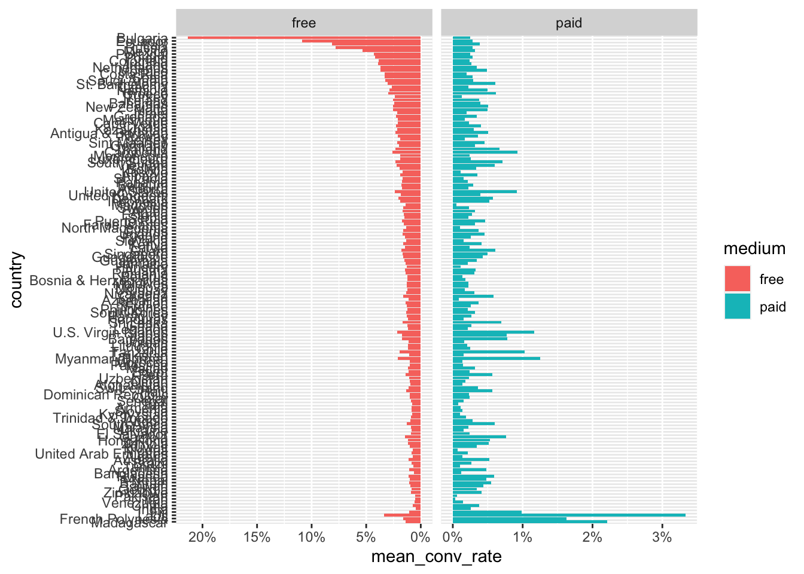
Code
free_vs_paid_by_country |>select(country, medium, mean_conv_rate) |># need to make one of the conv.rates negative in order# to plot them from-center-to-the-sides like a pyramidmutate(mean_conv_rate =ifelse( medium =="paid", mean_conv_rate,-mean_conv_rate ) ) |># remove not set as it's not actionable herefilter(country !="(not set)") |># add the extra columnsleft_join(countries_rank_by_low_free_sessions, join_by(country)) |>#filter(perc_sessions_free_rank <= 40) |> mutate(diff_conv_rates = mean_conv_rate_free - mean_conv_rate_paid) |>select(country, medium, mean_conv_rate, diff_conv_rates) |>mutate(country =fct_reorder(country, diff_conv_rates)) |>ggplot(aes(y = country)) +geom_segment(aes(x =0, xend = diff_conv_rates)) +scale_x_continuous(labels =label_percent(accuracy =0.1),expand =c(0, 0.001) ) +labs(y =NULL )